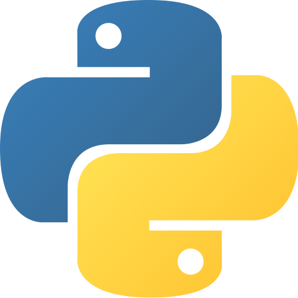

Bob,
la serre connectée.
Imaginer une serre capable de suivre l’environnement d’une plante et d’accompagner son entretien grâce à des capteurs, un microcontrôleur et une interface web.

Le point de départ
Nous avons imaginé Bob à partir d’une situation simple : lorsqu’on s’occupe d’une plante, il n’est pas toujours évident de savoir si son environnement lui convient ou si elle a besoin d’attention. L’idée était de rendre certaines informations accessibles et de proposer une solution connectée.
De l’idée au prototype
Le travail a mêlé réflexion sur les fonctionnalités, découverte des composants et programmation. Le système reposait sur un microcontrôleur ESP8266 et des capteurs. En parallèle, une interface web devait permettre de présenter les informations de manière lisible.
Des simulations de capteurs ont également été utilisées pour expérimenter et tester certains comportements sans dépendre en permanence du matériel.
Ma contribution
- Participation à la conception et au montage du dispositif.
- Travail sur l’interface web en HTML et CSS.
- Découverte et expérimentation de MicroPython.
- Participation aux tests, aux simulations et au débogage.
- Échanges avec l’équipe pour faire évoluer la solution.
Ce que j’en retiens
Bob m’a permis de découvrir les liens entre programmation, électronique et expérience utilisateur. J’ai aussi compris qu’un projet technique se construit par étapes : tester, observer, corriger et communiquer avec les autres membres de l’équipe.
